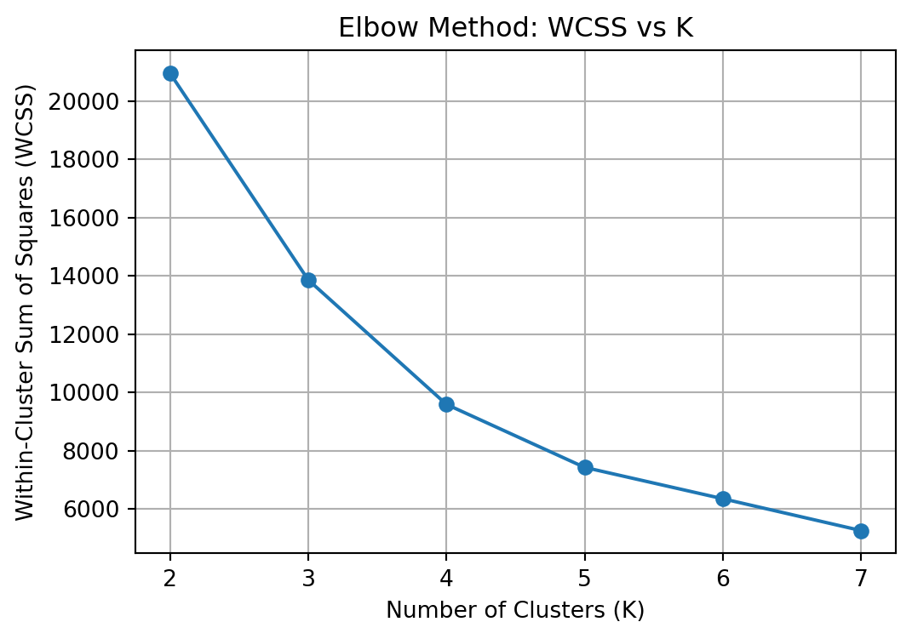
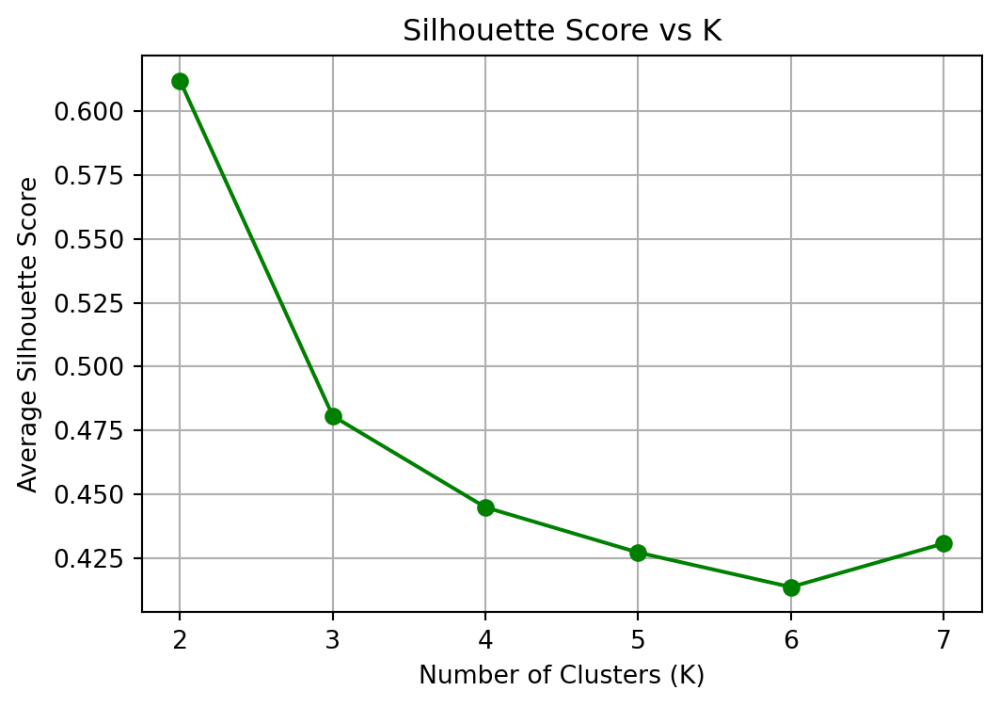
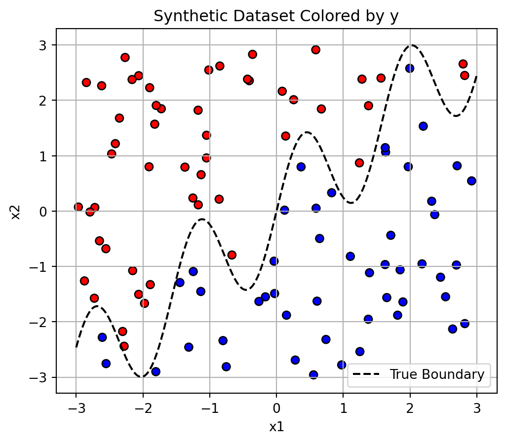
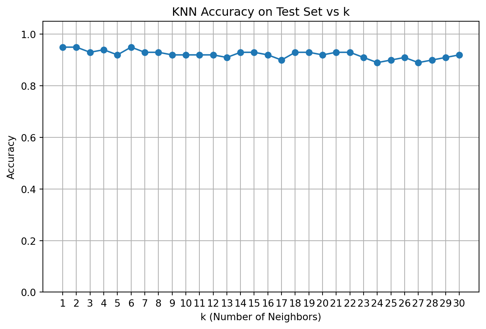

We explore the Palmer Penguins dataset by applying K-Means clustering to identify natural groupings based on physical traits. The clustering is performed using two continuous morphological features: bill length and flipper length. We implement the K-Means algorithm manually, allowing us to visualize the movement of centroids over iterations. We also compare our implementation to the sklearn. KMeans function to ensure consistency and accuracy in our results.
Both our custom version and the sklearn.KMeans function produce clusters that look quite similar. The built-in version reaches its result more quickly since it is optimized and includes helpful features like inertia_ and control over n_init. On the other hand, our manual implementation is more transparent and educational, making it easier to see how the centroids move and how the data points are assigned step by step.
K Selection - WCSS and Silhouette Scores
To determine the best number of clusters for our K-Means model, we used two popular evaluation metrics: Within-Cluster Sum of Squares (WCSS) and Silhouette Score. WCSS measures how tightly the points in each cluster are grouped, while the Silhouette Score indicates how distinct the clusters are from one another.
We tested K values ranging from 2 to 7, calculating both metrics for each. The chart below presents these results side by side, making it easier to spot the most suitable number of clusters.
import numpy as npimport pandas as pdimport matplotlib.pyplot as pltfrom sklearn.cluster import KMeansfrom sklearn.metrics import silhouette_scoredf = pd.read_csv("palmer_penguins.csv")data = df[['bill_length_mm', 'flipper_length_mm']].dropna().to_numpy()k_values =range(2, 8)wcss = []silhouette_scores = []# Loop over K valuesfor k in k_values: kmeans = KMeans(n_clusters=k, random_state=1, n_init=10) labels = kmeans.fit_predict(data)# Total within-cluster sum of squares wcss.append(kmeans.inertia_)# Silhouette score score = silhouette_score(data, labels) silhouette_scores.append(score)
plt.figure(figsize=(6, 4))plt.plot(k_values, wcss, marker='o')plt.title("Elbow Method: WCSS vs K")plt.xlabel("Number of Clusters (K)")plt.ylabel("Within-Cluster Sum of Squares (WCSS)")plt.grid(True)plt.show()

plt.figure(figsize=(6, 4))plt.plot(k_values, silhouette_scores, marker='o', color='green')plt.title("Silhouette Score vs K")plt.xlabel("Number of Clusters (K)")plt.ylabel("Average Silhouette Score")plt.grid(True)plt.show()

To determine the appropriate number of clusters (K) for the penguins dataset, I evaluated two key metrics across K = 2 to 7:
Elbow Method (WCSS) The Elbow Plot shows how the total within-cluster sum of squares decreases as K increases. We observe a sharp drop from K=2 to K=3, followed by a more gradual decrease thereafter. This suggests that K=3 might be a natural “elbow point,” beyond which adding more clusters yields diminishing returns in terms of compactness.
Silhouette Score The Silhouette Score measures how well each point fits within its assigned cluster. A higher score indicates more distinct and well-separated clusters. In this case, the silhouette score peaks at K=2, then declines steadily as more clusters are added. This suggests that K=2 results in the clearest, most compact separation between clusters.
K=2 yields the best silhouette score, meaning the clusters are highly distinct.
K=3 gives a good balance according to the elbow method, suggesting a more nuanced segmentation without overfitting. Depending on the goal, both K=2 and K=3 are defensible. For simplicity and separation, K=2 is optimal. For more detailed segmentation, K=3 is a reasonable choice.
2a. K Nearest Neighbors
In this section, we apply and examine the K-Nearest Neighbors (KNN) classification algorithm using a synthetic dataset. The dataset includes a nonlinear decision boundary, which makes it well-suited for showcasing KNN’s strength in handling flexible, non-parametric classification problems.
import numpy as npimport pandas as pdimport matplotlib.pyplot as plt# Set seed for reproducibilitynp.random.seed(42)# Number of observationsn =100# Generate featuresx1 = np.random.uniform(-3, 3, size=n)x2 = np.random.uniform(-3, 3, size=n)# Wiggly decision boundaryboundary = np.sin(4* x1) + x1y = (x2 > boundary).astype(int) # 1 if above boundary, else 0# Create DataFramedat = pd.DataFrame({'x1': x1, 'x2': x2, 'y': y})# Previewprint(dat.head())plt.figure(figsize=(6, 5))plt.scatter(dat['x1'], dat['x2'], c=dat['y'], cmap='bwr', edgecolor='k')x_vals = np.linspace(-3, 3, 300)plt.plot(x_vals, np.sin(4* x_vals) + x_vals, color='black', linestyle='--', label='True Boundary')plt.xlabel("x1")plt.ylabel("x2")plt.title("Synthetic Data with Nonlinear Decision Boundary")plt.legend()plt.grid(True)plt.show()
The scatter plot shows synthetic data with two features, x1 and x2, used to classify points into two classes: red and blue. The dashed line represents the true nonlinear decision boundary, which separates the classes based on a complex relationship between x1 and x2.
import matplotlib.pyplot as pltimport numpy as np# Scatter plot colored by class label yplt.figure(figsize=(6, 5))plt.scatter(dat['x1'], dat['x2'], c=dat['y'], cmap='bwr', edgecolor='k')x_vals = np.linspace(-3, 3, 300)boundary = np.sin(4* x_vals) + x_valsplt.plot(x_vals, boundary, color='black', linestyle='--', label='True Boundary')# Stylingplt.xlabel("x1")plt.ylabel("x2")plt.title("Synthetic Dataset Colored by y")plt.legend()plt.grid(True)plt.show()

Generating the Test Dataset (Different Seed)
To assess the performance of our KNN classifier on new data, we created a separate test dataset using the same generation process as the training set, but with a different random seed. This approach keeps the true decision boundary consistent while introducing different data points, simulating a real-world situation where the model encounters previously unseen samples.
import numpy as npimport pandas as pdimport matplotlib.pyplot as plt# Set a different seed for test datanp.random.seed(123)# Number of test pointsn_test =100# Generate featuresx1_test = np.random.uniform(-3, 3, size=n_test)x2_test = np.random.uniform(-3, 3, size=n_test)# Wiggly decision boundaryboundary_test = np.sin(4* x1_test) + x1_testy_test = (x2_test > boundary_test).astype(int)# Create test DataFrametest_dat = pd.DataFrame({'x1': x1_test, 'x2': x2_test, 'y': y_test})# Previewprint(test_dat.head())
import numpy as npfrom collections import Counterdef euclidean_distance(p1, p2):return np.sqrt(np.sum((p1 - p2) **2))def knn_predict(X_train, y_train, X_test, k=5): predictions = []for test_point in X_test: distances = [euclidean_distance(test_point, train_point) for train_point in X_train]# Get indices of k nearest neighbors k_indices = np.argsort(distances)[:k]# Get the majority class k_labels = y_train[k_indices] most_common = Counter(k_labels).most_common(1)[0][0] predictions.append(most_common)return np.array(predictions)
# Extract training features and labelsX_train = dat[['x1', 'x2']].to_numpy()y_train = dat['y'].to_numpy()# Extract test featuresX_test = test_dat[['x1', 'x2']].to_numpy()# Predict using manual KNNmanual_preds = knn_predict(X_train, y_train, X_test, k=5)
Validating K-Nearest Neighbors
from sklearn.neighbors import KNeighborsClassifierfrom sklearn.metrics import accuracy_score# Use scikit-learn for validationknn_model = KNeighborsClassifier(n_neighbors=5)knn_model.fit(X_train, y_train)sklearn_preds = knn_model.predict(X_test)# Accuracy comparisonprint("Manual KNN Accuracy:", accuracy_score(test_dat['y'], manual_preds))print("scikit-learn KNN Accuracy:", accuracy_score(test_dat['y'], sklearn_preds))# Check if predictions matchmatch = np.all(manual_preds == sklearn_preds)print("Do manual and sklearn predictions match exactly?", match)
Manual KNN Accuracy: 0.92
scikit-learn KNN Accuracy: 0.92
Do manual and sklearn predictions match exactly? True
Your manual KNN implementation is correct and reliable:
Both our custom algorithm and scikit-learn’s KNeighborsClassifier achieved 92% accuracy on the test set.
The predictions from both methods match exactly, confirming our distance calculation, majority vote logic, and implementation are spot on.
Our manual KNN model performs identically to the industry-standard version, successfully classifying nonlinear data with high accuracy.
KNN Accuracy Sweep (k = 1 to 30)
import matplotlib.pyplot as plt# Store accuracies for each kaccuracies = []# Loop over k from 1 to 30for k inrange(1, 31): preds = knn_predict(X_train, y_train, X_test, k=k) acc = accuracy_score(test_dat['y'], preds) accuracies.append(acc)# Plot accuracy vs kplt.figure(figsize=(8, 5))plt.plot(range(1, 31), accuracies, marker='o')plt.title("KNN Accuracy on Test Set vs k")plt.xlabel("k (Number of Neighbors)")plt.ylabel("Accuracy")plt.grid(True)plt.xticks(range(1, 31))plt.ylim(0, 1.05)plt.show()

Choosing the Best k for KNN
To find the optimal value of k in the K-Nearest Neighbors algorithm, I evaluated test accuracy across values from k = 1 to 30. The resulting plot shows how accuracy changes with different numbers of neighbors.
What the Plot Tells Us
Overall accuracy is high across all k values, consistently above 90%, which indicates the model is robust to the choice of k on this dataset.
The peak accuracy appears around k = 6, suggesting that using 6 nearest neighbors yields the best generalization to the test data.
For very low values of k (like k=1), the model may overfit — capturing noise in the training data.
For higher values of k, the model becomes more biased (smoother boundary), and accuracy slightly drops.
Conclusion
k = 6 is the sweet spot for this dataset, offering the best balance between overfitting and underfitting. It’s the value I would choose for deploying this KNN model on new, unseen data.